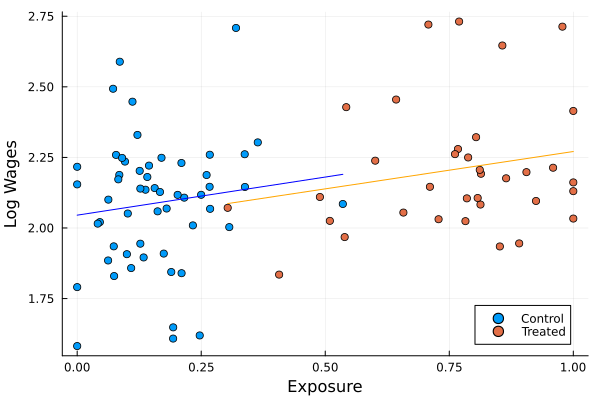

Replication: Urban Public Works in Spatial Equilibrium
This document contains my replication of the main results of Urban Public Works in Spatial Equilibrium (2023) by Franklin, Imbert, Abebe, and Mejia-Mantilla. The paper analyses the results of a randomised control trial which randomly assigned poorer areas of Addis Ababa, Ethiopia, to public works projects aimed at neighbourhood improvement. I replicated five of the paper’s main results (tables 2, 3, 4, and 6 as well as figure 2) in Julia, as well as table 5, which I replicated using Julia’s RCall package for reasons which I expand on below. The code takes significantly longer to run than the original R version, which is surprising given Julia is generally faster than R - the slow down seems to be mostly due to the many regressions necessary to calculate the RI p-values for table three, for these I have tried several different solutions, including both multithreading the loop which runs them (though the FixedEffectsModlels.jl package already should multithread each regression), as well as the @fastmath macro - however while multithreading brings a slight performance increase, the speed remains very slow.
T2 Treatment Effects on Labour Outcomes
I first replicate the results on the direct effects of the public works program on employment and amenities using the specification: \[ Y_{whi} = \alpha Y_{whi}^0 + \beta T_i + \delta X_{whi} + \varepsilon_{whi} \]
Where \(Y_{whi}^0\) is a worker’s outcome at baseline, and \(X_{whi}\) is a set of worker controls at baseline. This is a direct intention-to-treat estimate, as within each area \(i\) there are both eligible and non-eligible workers \(w\). The identification assumption is that the randomisation was succesful. Results are identical for the employment specifications, and only slightly different for the Neighbourhood Amenities column. These small differences may be due to differences in the controls used - here, as in the replication package, I only use subcity fixed effects in the neighborhood amenities column, whereas in the paper it is mentioned that individual controls are also used. I also tried replicating the specification where additional controls are selected using a GLMNet process, but for me this selected a different set of controls than in the R replication package.
| Employment | Public Employment | Private Employment | Neighbourhood Amenities | |
| (1) | (2) | (3) | (4) | |
| Treatment | -0.001 | 0.046*** | -0.047*** | 0.570*** |
| (0.012) | (0.002) | (0.012) | (0.077) | |
| Subcity Fixed Effects | Yes | Yes | Yes | Yes |
| Controls | Yes | Yes | Yes | |
| Observations | 19,442 | 19,442 | 19,442 | 5,712 |
| Control Mean | 0.366 | 0.0 | 0.366 | 0.0 |
| Employment | Public Employment | Private Employment | Neighbourhood Amenities | |
| (1) | (2) | (3) | (4) | |
| Treatment | 0.021 | 0.101*** | -0.080*** | 0.603*** |
| (0.015) | (0.003) | (0.014) | (0.083) | |
| Subcity Fixed Effects | Yes | Yes | Yes | Yes |
| Controls | Yes | Yes | Yes | |
| Observations | 8,679 | 8,679 | 8,679 | 2,409 |
| Control Mean | 0.36 | 0.0 | 0.359 | -0.007 |
| Employment | Public Employment | Private Employment | Neighbourhood Amenities | |
| (1) | (2) | (3) | (4) | |
| Treatment | -0.001 | 0.046*** | -0.047*** | 0.570*** |
| (0.012) | (0.002) | (0.012) | (0.077) | |
| Subcity Fixed Effects | Yes | Yes | Yes | Yes |
| Controls | Yes | Yes | Yes | |
| Observations | 19,442 | 19,442 | 19,442 | 5,712 |
| Control Mean | 0.366 | 0.0 | 0.366 | 0.0 |
Wage Effects
I now replicate the paper’s results on the effects of the public works program on wages. For this purposes the naive specification above is unlikely to be appropriate as there are likely spillover’s between treated and non-treated areas due to commuting patterns - this means the Stable Unit Treatment Value Assumption (SUTVA) is unlikely to hold. The authors construct a spatial equilibrium model which emphasises that due to commuting, the effects of the program are likely captured in changes by wage changes at the place of work rather than the place of residence. By ignoring endogenous changes to commuting patterns the authors can then take the model to the data by constructing an exposure variable: \[ Exposure_j = \sum_i \lambda_{ij} T_i - \frac{1}{R} \sum_{0 \leq r \leq R} \sum_i \lambda_{ij} \tilde{T_i^r} \]
Where \(T_i\) is a dummy for the implementation of the program in neighborhood of residence \(i\) and \(\lambda_{ij}\) is the probability at baseline that a worker who works in neighbourhood \(j\) lives in neighbourhood \(i\). The second term is a recentering of actual exposure using average potential exposure from 2000 simulated independent treatment asignments which follow the same random allocation, which avoids omitted variable bias. This is similar to a shift-share instrument, with \(\lambda_{ij}\) the endogenous share, and \(T_i\) the exogenous shift. On the assumption that the the randomisation of treatment was succesful, \(\beta\) in the following equation then captures the causal effect of program exposure on wages: \[ \ln w_j = \alpha + \beta Exposure_j + \gamma \ln w_j^0 + \delta X_j + \varepsilon_j \]
F3
I now succesfully replicate figure three. Figure three is a scatter plot of average log wages in an area on the exposure variable above, separated into those areas which were actually treated and those that were not, showing a similar positive association between exposure and wages, with little discontinuity between the two groups.
 This is a Quarto website.
To learn more about Quarto websites visit https://quarto.org/docs/websites.